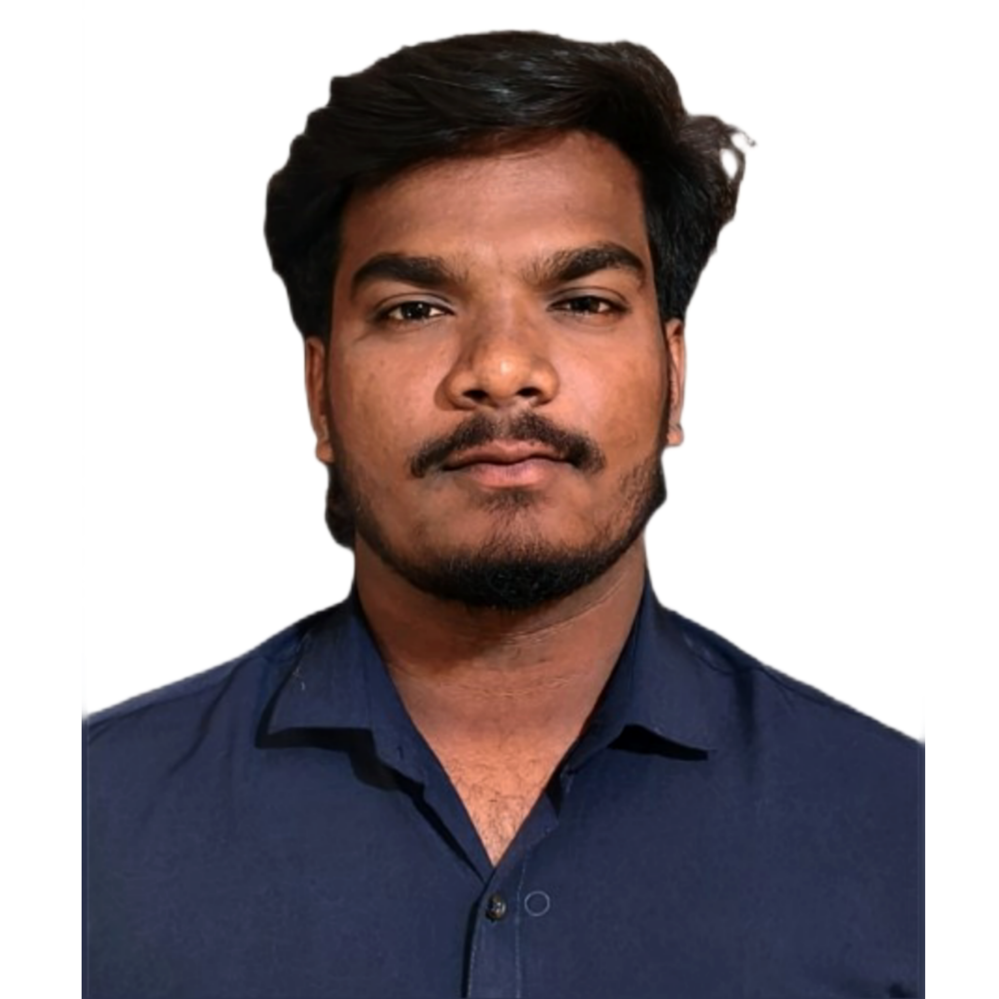

Hello !
I am Bosi Rajesh
Web Developer & UI/UX Designer
I design and build responsive user-centric websites with performance and accessibility in mind.
About Me
I am a passionate Web Developer, currently pursuing my B.Tech in Computer Science (CGPA: 8.47) from Centurion University of Technology and Management, Paralakhemundi.
I enjoy building interactive, user-centric websites, exploring front-end frameworks, and creating seamless user experiences.
- B.Tech Duration: 2021 – 2025
- Languages Known: English, Hindi, Odia, Telugu
- Tech Stack: HTML, CSS, JavaScript, React
Personal Details
- Gender: Male
- Date of Birth: 11 June, 2002
- Email: bosirajesh18@gmail.com
- Phone: 9078554556 / 8147674621
- Address: Chinna Street, Tatipatti, Gajapati, Odisha – 761210
Education
-
Centurion University of Technology and Management, Paralakhemundi
B.Tech – Computer Science & Engineering
CGPA: 8.30 / 10
-
Jawahar Navodaya Vidyalaya, Gajapati
12th – CBSE Board
Percentage: 77%
-
Jawahar Navodaya Vidyalaya, Gajapati
10th – CBSE Board
Percentage: 73%
Projects
üöÄ Virtual Space Mission
The objective of this project is to create a realistic Space Mission Model and provide users with an immersive experience of launching and exploring space through a virtual tour.
- Software Used: Blender, Unity
- Technologies: 3D Modeling, Unity3D, Virtual Reality, Animation
üõï Virtual Ayodhya Temple
This project is a 3D representation of the Ayodhya Ram Mandir, designed to offer a virtual tour of the iconic temple located in Ayodhya. It aims to bring cultural heritage to life through immersive technology.
- Software Used: Blender, Unity
- Technologies: 3D Modeling, Unity3D, Virtual Reality, Animation
Internship
Gram Tarang (June - July 2024)
Developed a learning website with a 3D interface using Unity and Blender for modeling. Applied UX principles to improve interaction.
Skills & Tools
- Languages: HTML5, CSS, JavaScript, Python
- Frameworks: React, Bootstrap, Tailwind CSS
- Tools: Git, VS Code, Figma, Unity, Blender
Achievements
1. Runner-Up in the 3D Digital Game Art Competition at Manzar 2.o the national student management Fest.
2. Runner-Up in one-day workshop on COGITATE Art of Critical Thinking